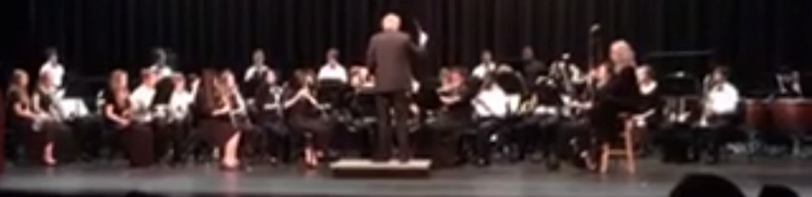

Our concert band is what most people think of when you say the word "band." It is when you sit in a chair and play your instrument to concert music. We still go to competitions, but that is not what they are called, and we go to maybe one or two. Music is separated into 6 grades. Grade 1 is simple music like twinkle twinkle little star. Grade 6 music is music that is very challenging to play right. Sightreading is when you have never seen a piece of music before and you are playing it for the first time by just reading the music. Last year we went to concert festival (competition like event) and played grade 5 music. We also sightread grade 5 music. We got superiors (the best ranking) in both our pieces that we played and our sightreading.
By Wesley F